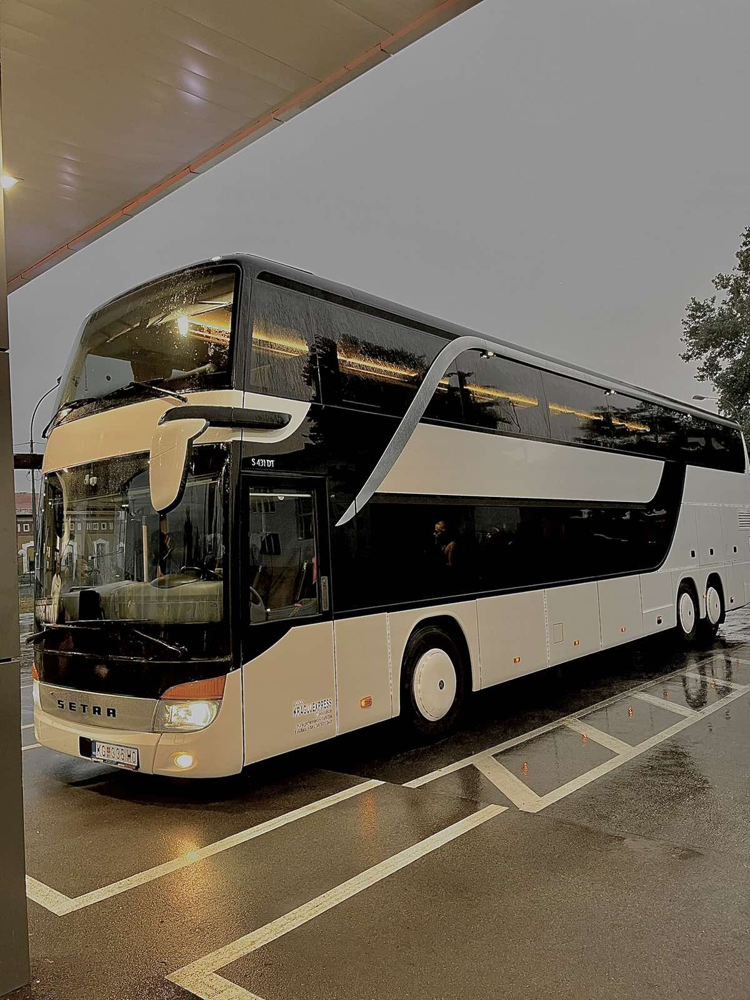
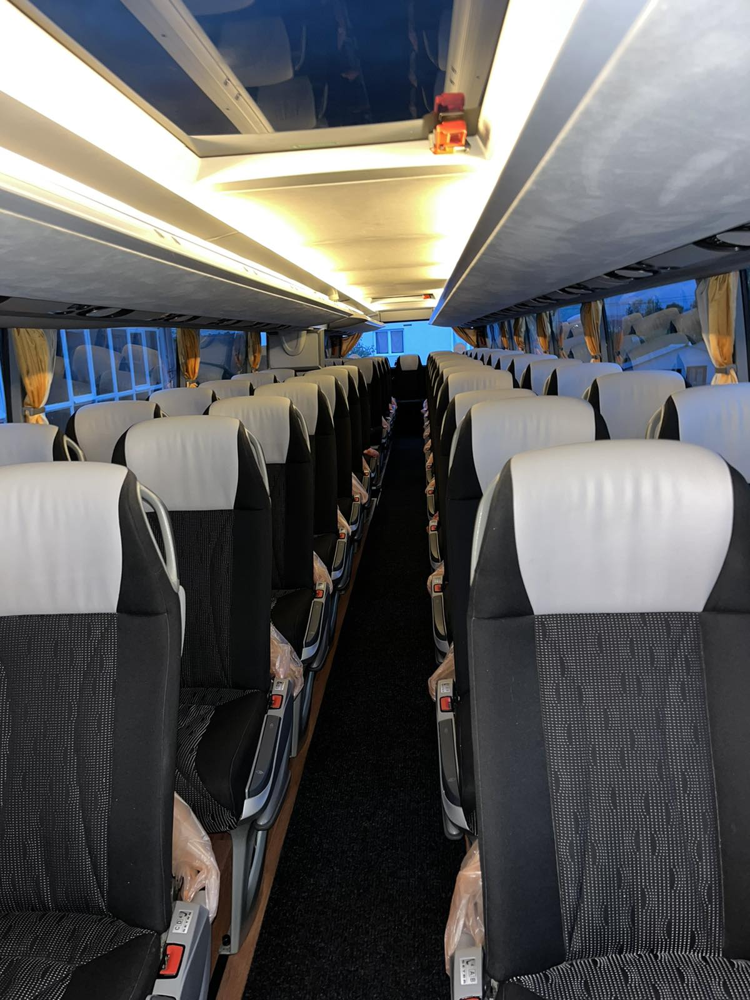
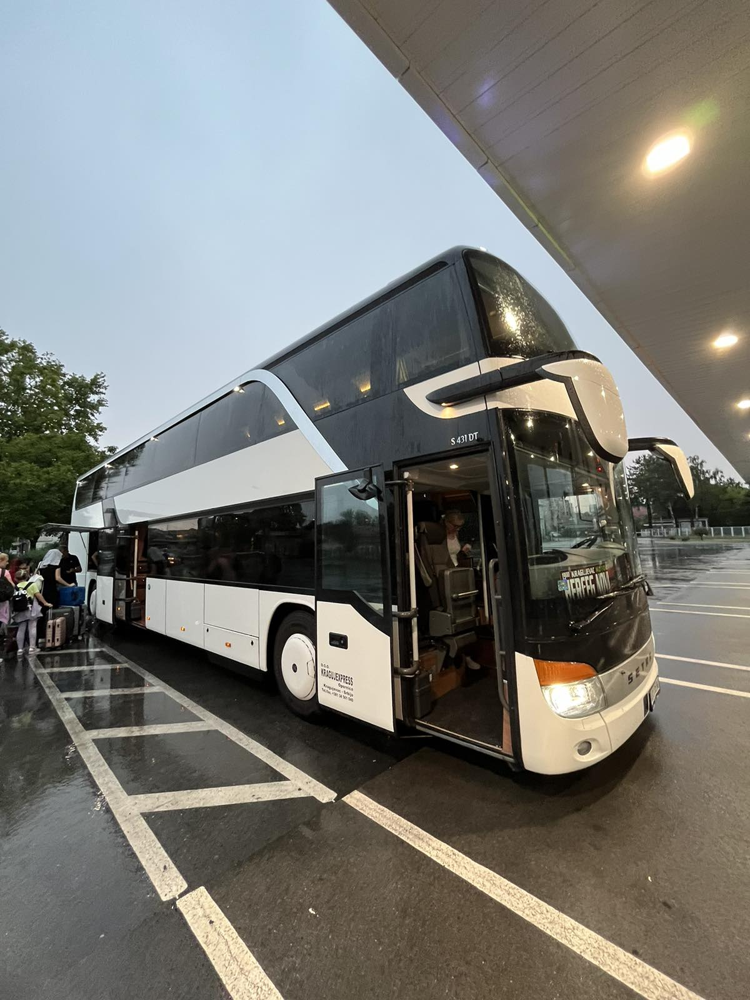
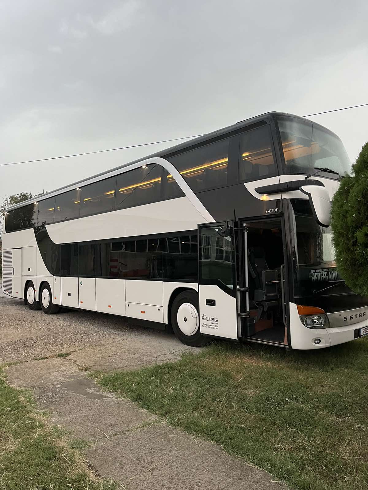

SETRA S431 DT (81 + 2)

1
2
3
4
5
6



Autobus SETRA S431 DT je model dvospratnog autobusa koji je deo renomirane Setra TopClass serije, namenjene za dugolinijski prevoz i turističke vožnje. Evo nekoliko osnovnih karakteristika:
- Kapacitet: Ovaj model ima kapacitet za 81 putnika plus 2 sedišta za posadu, što ga čini jednim od najprostranijih autobusa u svojoj klasi.
- Dizajn: Ima modernu i aerodinamičnu spoljašnju liniju, koja doprinosi manjoj potrošnji goriva i većoj udobnosti vožnje.
- Tehnologija: Opremljen je naprednim sigurnosnim sistemima, uključujući asistente za kočenje, stabilnost i kontrolu trake, što doprinosi visokom nivou sigurnosti na dugim putovanjima.
- Unutrašnjost: Udobna sedišta sa opcijama za podešavanje, individualna ventilacija, kao i multimedijalni sistemi za zabavu tokom vožnje.
- Motor: Pokreće ga moćan Euro 6 motor, koji zadovoljava stroge ekološke standarde, uz visok nivo efikasnosti i snage za udobnu vožnju na dugim relacijama.
Ovaj model je popularan među prevoznicima zbog svoje pouzdanosti, ekonomičnosti i visokog nivoa udobnosti za putnike na dugim putovanjima.